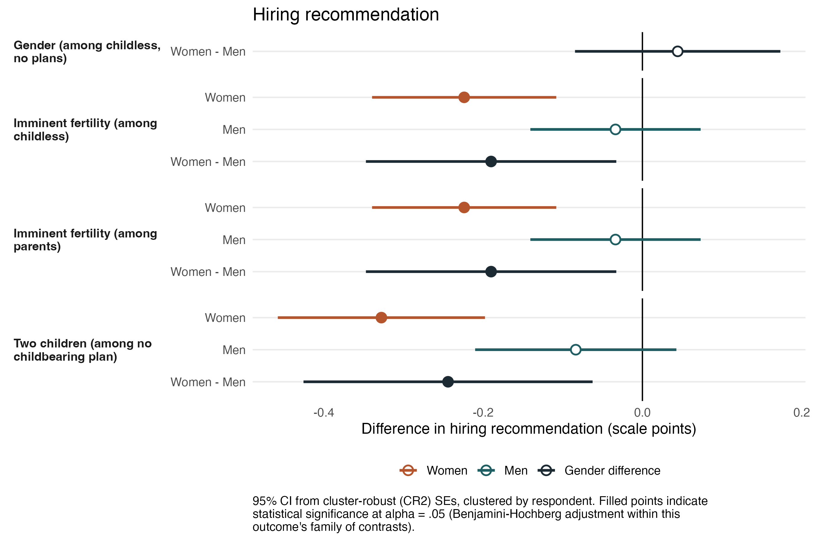
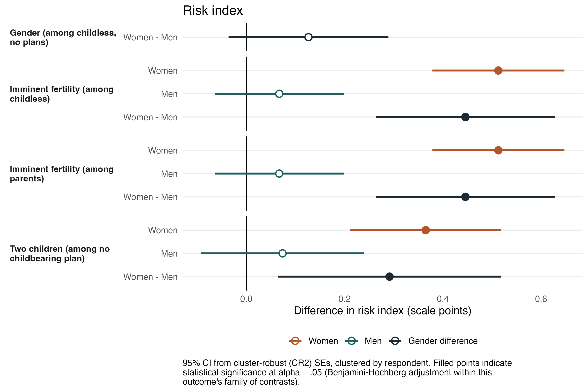
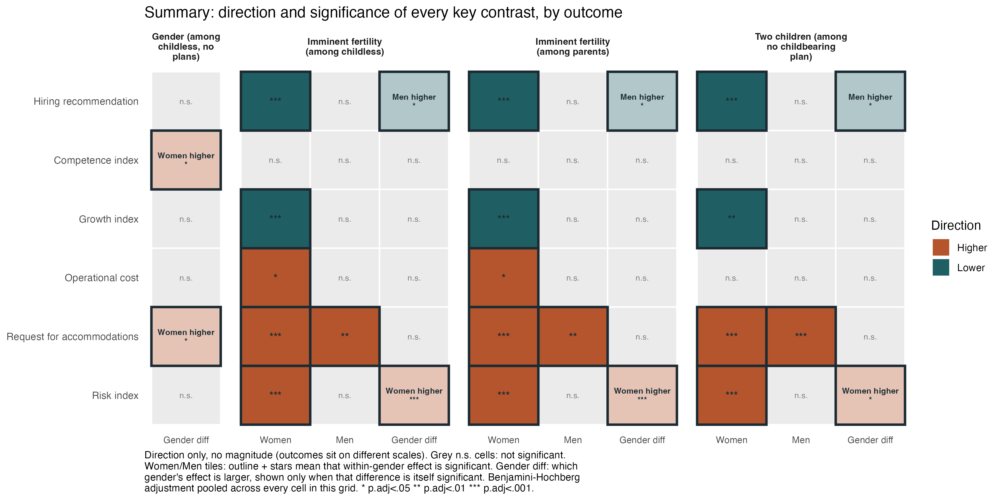

Clase 9: Trabajo remunerado y mercado laboral
SOL191 · Instituto de Sociología · PUC
SOL191 · Clase 9: Trabajo remunerado y mercado laboral
Diseño
Variables de resultado
Pensando en el diseño del estudio:



Solo dirección, no magnitud — las variables de resultado se encuentran en escalas distintas.
Las señales familiares aumentan el uso esperado de facilidades tanto para mujeres como para hombres.
Pero las consecuencias negativas recaen exclusivamente sobre las mujeres: más costosas, menor potencial de crecimiento, más riesgosas. En Chile, estas expectativas son reforzadas por políticas que vinculan licencias y beneficios primordialmente a las madres.
Estudio cualitativo con reclutadores y empleadores en Santiago sobre cómo operan los criterios de selección y qué sesgos se activan en la contratación.
A partir de la lectura:
En grupos de máximo 4 personas:
This Photo by Unknown Author is licensed under CC BY-SA-NC
Brecha bruta (no ajustada)
Diferencia promedio entre salarios de hombres y mujeres, sin controlar por nada.
Brecha ajustada
Diferencia entre hombres y mujeres comparables (misma educación, experiencia, ocupación, sector).
Brecha explicada vs. no explicada
La parte explicada se debe a diferencias observables. La no explicada es el residuo: puede reflejar discriminación, pero también variables no observadas.
La pregunta clave: ¿qué se está controlando? Un mismo país puede tener brecha bruta de 25% y ajustada de 8%.
🎥 Video incrustado para discusión grupal
5 minutos — responde en Wooclap:
Pensando en todo lo que vimos hoy (castigo a la maternidad, discriminación en contrataciones, brecha salarial):
SOL191 Sociología del Género · Clase 9